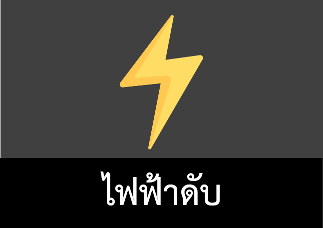
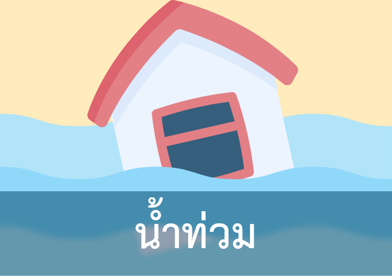
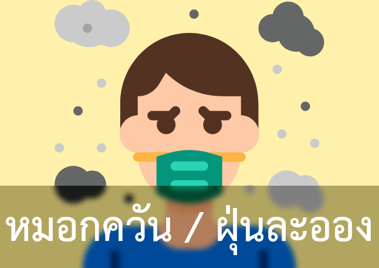
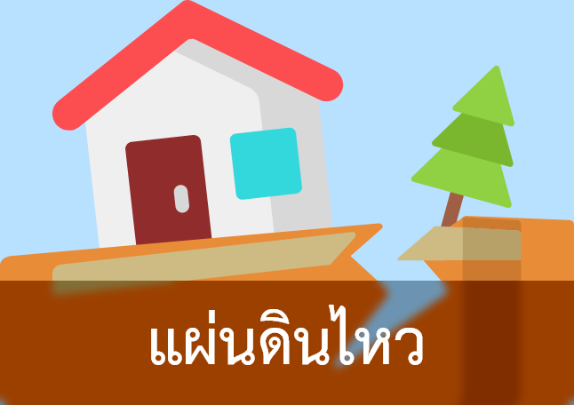
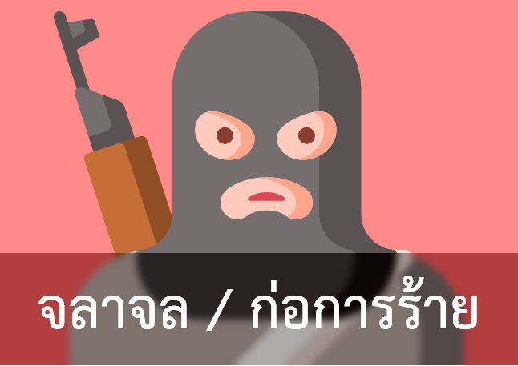
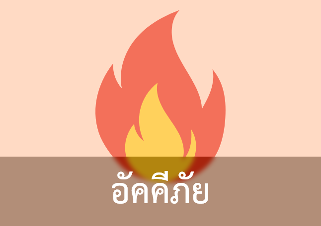
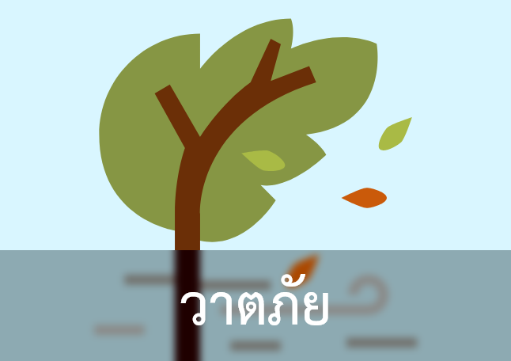

ESI Project
เมนู
ข้อปฏิบัติ
ช่องทางติดต่อขอความช่วยเหลือ
สถานที่เข้ารับการรักษา
การปฏิบัติตนขณะเกิดเหตุการณ์ฉุกเฉิน
ข้อมูลเพื่อการรับมือกับเหตุการณ์ฉุกเฉิน
ข้อปฏิบัติ







ช่องทางติดต่อขอความช่วยเหลือ
หมายเลขโทรศัพท์กรณีฉุกเฉิน เหตุด่วน - เหตุร้าย
สำนักงานรักษาความปลอดภัยและการจราจร
0-4320-2191
สำนักงานรักษาความปลอดภัยและการจราจร (สายด่วน)
08-1708-5891
หน่วยกู้ชีพนครินทร์
0-4336-3191
ศูนย์กู้ชีพนเรนทร
1669
สถานีตำรวจภูธรย่อย มข.
0-4320-4383
งานซ่อมบำรุงและปฏิบัติการพิเศษ กองอาคารและสถานที่ (สายด่วน)
08-1471-1119
งานไฟฟ้า มข.
0-4320-2399
ภารกิจบริการสื่อสารและโทรคมนาคม
0-4300-9700
ศูนย์ควบคุมการเดินรถโดยสารภายใน มข.
0-4320-2191
ศูนย์ปฏิบัติการรักษาความปลอดภัยทางกายภาพระบบกล้องวงจรปิด
0-4320-2191
สถานที่เข้ารับการรักษา
หมายเลขโทรศัพท์กรณีฉุกเฉิน เหตุด่วน - เหตุร้าย (มหาวิทยาลัยขอนแก่น)
สิทธิการรักษาของนักศึกษา มข.
Click
ศูนย์สุขภาพ 123 มข. ตั้งอยู่หลังหอพัก 8 หลัง
043–203455
ศูนย์สุขภาพ 123 มข. ตั้งอยู่หลังหอพัก 8 หลัง
043–203455
ศูนย์สุขภาพนักศึกษา มข. ตั้งอยู่หลังคอมเพล็กซ์
043–203454
ศูนย์สุขภาพสามเหลี่ยม
043–242101
แผนกการพยาบาลเวชปฏิบัติครอบครัว
043–363135-6
เหตุด่วนเหตุร้าย
191
การแพทย์ฉุกเฉิน
1669
เหตุเพลิงไหม้
199
เหตุไฟฟ้าขัดข้อง
1130
เหตุด่วนทางน้ำ
1199
กองปราบปราม
1195
ตำรวจทางหลวง
1193
กรมอุตุนิยมวิทย
0-2399-4568-74
ไฟฟ้าดับ
ข้อปฏิบัติเมื่อไฟฟ้าดับ
1. ปิดและถอดปลั๊กไฟอุปกรณ์ไฟฟ้าทุกชนิด ป้องกันการกระชากของไฟ
2. หาอุปกรณ์ส่องสว่างทดแทน เช่น ไฟฉาย ตะเกียง ไฟแช็ก และเทียน เป็นต้น
3. การจุดเทียน ต้องคอยตรวจดูอยู่ตลอดเวลา ถ้าต้องปิดประตูหน้าต่างทั้งหมด อย่าจุดเทียนมากเกินไป เพราะจะทำให้ออกซิเจนภายในห้องลดลง
4. อย่าพยายามแก้ไขระบบไฟฟ้าด้วยตนเองหากไม่ชำนาญ
5. โทรศัพท์แจ้งเหตุไฟฟ้าดับไปยังศูนย์แจ้งเหตุฉุกเฉิน (การไฟฟ้าส่วนภูมิภาค 1129)
ปิดหน้าต่างนี้
น้ำท่วม
ข้อปฏิบัติเมื่อน้ำท่วม (กรณีไม่รุนแรง)
1. ขนย้ายสารเคมีอันตราย อุปกรณ์ไฟฟ้าหรือสิ่งของขึ้นที่สูง
2. หากทำได้ให้ตัดกระแสไฟฟ้า
3. ห้ามขับรถยนต์หรือรถจักรยานยนต์ผ่านบริเวณที่มีน้ำท่วมสูง
ข้อปฏิบัติเมื่อน้ำท่วม (กรณีรุนแรง)
1. ตั้งสติ อย่าตื่นตระหนก
2. ติดตามคำสั่งอพยพ
3. ควรให้ความช่วยเหลือผู้พิการก่อน
4. หลีกเลี่ยงการเดินผ่านน้ำที่ท่วมหรือข้ามลำน้ำที่มีระดับน้ำสูงเหนือเข่า และบริเวณที่ กระแสน้ำไหลเชี่ยวกราก
5. ติดตามข้อมูลข่าวสารกรมทรัพยากรน้ำ
Click
ปิดหน้าต่างนี้
หมอกควัน / ฝุ่นละออง
ข้อปฏิบัติเมื่อต้องเผชิญกับหมอกควัน หรือฝุ่นละออง
1. ติดตามข้อมูลสถานการณ์คุณภาพอากาศในช่องทางต่างๆ
Click
2. หลีกเลี่ยงการสัมผัสฝุ่นละออง
3. หลีกเลี่ยงหรืองดการกิจกรรมนอกอาคาร
4. ใช้หน้ากากประเภท “Particulate respirator” ที่มีเครื่องหมาย NIOSH ทั้งประเภท N95 หรือ P100
5. ดื่มน้ำสะอาดให้เพียงพอ 6 แก้วต่อวันและพักผ่อนให้เพียงพอ
6. ถ้ามีอาการผิดปกติ เช่น หายใจติดขัด แน่นหน้าอก วิงเวียนศีรษะ หรือหมดสติ ให้รีบพบแพทย์
ปิดหน้าต่างนี้
แผ่นดินไหว
ข้อปฏิบัติเมื่อเกิดแผ่นดินไหว
1. กรณีอยู่ในอาคารให้หาที่หลบกำบังในบริเวณที่ปลอดภัยพร้อมใช้มือกำบังศีรษะและลำคอ โดยหมอบบริเวณใต้โต๊ะหรือเก้าอี้ที่แข็งแรงไม่มีสิ่งของหล่นใส่ หรืออยู่ในจุดที่มีโครงสร้างแข็งแรง
2. เตรียมความพร้อมสำหรับการสั่นหรือไหวตัวอีกระลอก
3. ห้ามวิ่งหนีออกจากอาคารโดยใช้ลิฟต์หรือบันไดหนีไฟอย่างเด็ดขาด
4. เมื่อแผ่นดินไหวยุติ ให้รีบออกจากอาคารโดยเร็วที่สุด
5. ให้ติดตามรับฟังสถานการณ์พร้อมปฏิบัติตามประกาศเตือนภัยจากมหาวิทยาลัยหรือหน่วยงานภาครัฐอย่างเคร่งครัด
ปิดหน้าต่างนี้
จลาจล / ก่อการร้าย
ข้อปฏิบัติเมื่อเกิดการจลาจล หรือการก่อการร้าย
1. ทำตัวเองให้เคลื่อนไหวง่ายที่สุด ถอดโบว์ไทหรือเนคไทออก ปลดกระดุมแขนเสื้อให้แขนเคลื่อนไหวได้ง่าย
2. ในการหลบหนีออกจากกลุ่มผู้ประท้วง ถ้าเป็นไปได้ควรหากลุ่มคนแล้วเดินหลบออกมาเป็นกลุ่ม จะได้ไม่เป็นเป้าสายตา และพยายามเดินอย่างมีสติ อย่าวิ่งหนีเพราะจะทำให้เป็นจุดเด่นขึ้นมาได้
3. หากติดอยู่ในอาคาร ให้หามุมที่ปลอดภัยที่สุดในการหลบ อย่าไปยืนอยู่ริมหน้าต่างเป็นอันขาด เพราะจะทำให้คนภายนอกเห็นได้ชัดเจนหรือถ้ามีการยิงกันกระสุนอาจจะหลงมาโดนได้
4. หากกำลังขับรถ อย่าหยุดรถแล้วลงจากรถเป็นอันขาด ให้ขับรถต่อไปเพื่อหนีจากฝูงชน
5. หากได้ยินเสียงปืน หมอบคว่ำหน้าลงกับพื้น หากเป็นไปได้ควรคลานไปยังเกราะกำบัง ที่ใกล้ที่สุด
6. ออกจากสถานที่เกิดเหตุเมื่อแน่ใจว่าปลอดภัย แจ้งให้เจ้าหน้าที่ตำรวจ ทราบโดยทันที
7. ช่วงเวลาที่มีการชุมนุมประท้วง ควรเลือกแต่งกายด้วยเสื้อผ้าที่ไม่เลือกข้าง
8. ติดตามข้อมูลข่าวสารและประกาศต่างๆ
ปิดหน้าต่างนี้
โรคระบาด
ข้อปฏิบัติเมื่อเกิดโรคระบาด
1. ศึกษาข้อมูลของโรคระบาดเพื่อให้ทราบถึงอันตราย การแพร่ระบาด หรือการติดต่อ การรักษา รวมถึงวิธีป้องกัน
2. รักษาสุขอนามัยพื้นฐานของตนเอง
3. กรณีพบเพื่อนนักศึกษาที่เข้าข่ายต้องสงสัยว่าติดโรคระบาด แนะนำให้เข้ารับการตรวจ รักษาเบื้องต้น ณ หน่วยบริการสุขภาพนักศึกษาที่ใกล้ที่สุด
4. หลีกเลี่ยงการคลุกคลีกับผู้ป่วย เพื่อไม่ให้มีการสัมผัส หรือไอจามรดกัน
5. อย่าใช้สิ่งของเครื่องใช้ต่างๆร่วมกับผู้ป่วย
6. ควรอยู่ในที่ที่มีอากาศบริสุทธิ์ไม่ควรอยู่กันอย่างหนาแน่น เบียดเสียด แออัด อากาศ สามารถถ่ายเทได้สะดวก
ปิดหน้าต่างนี้
อัคคีภัย
ข้อปฏิบัติเมื่อเกิดอัคคีภัย (กรณีเป็นผู้พบเหตุการณ์)
1. ใช้เครื่องเตือนอัคคีภัยในบริเวณใกล้เคียง
2. หากเพลิงมีขนาดเล็กไม่ใหญ่มากให้ใช้ถังดับเพลิง
3. หากไม่สามารถดับเพลิงได้ให้รีบอพยพ
4. การอพยพให้ใช้บันไดหนีไฟเท่านั้น
ข้อปฏิบัติเมื่อเกิดอัคคีภัย (กรณีได้ยินสัญญาณเตือนภัย)
1. อย่าตื่นตระหนก ตั้งสติห้ามสนใจทรัพย์สินใดๆ
2. อพยพออกจากพื้นที่เพื่อไปยังบันไดหนีไฟ
3. กรณีเส้นทางมีควัน ให้ใช้วิธีการคลานบนพื้น
4. ห้ามวิ่งโดยเด็ดขาด ให้ใช้วิธีการเดินเร็วเพื่อความปลอดภัย
5. ออกจากตัวอาคารแล้วห้ามกลับเข้าไปอีกโดยเด็ดขาด
6. หากทราบว่ายังมีคนติดอยู่ภายในอาคารให้แจ้งเจ้าหน้าที่ดับเพลิงเพื่อเป็นประโยชน์ต่อเจ้าหน้าที่ดับเพลิง
ข้อปฏิบัติเมื่อเกิดอัคคีภัย (กรณีติดอยู่ภายในและไม่สามารถอพยพออกจากอาคารได้)
1. ปิดประตูหรือหน้าต่างด้านที่อยู่ภายในตัวอาคารเพื่อป้องกันควันเข้า
2. ใช้ผ้าชุบน้ําอุดตามช่องว่างรอบประตูหรือหน้าต่าง
3. โทรศัพท์แจ้งเจ้าหน้าที่
4. เปิดหน้าต่างด้านที่อยู่ภายนอกตัวอาคารและพยายามให้สัญญาณแก่คนภายนอก
5. รอรับความช่วยเหลือ โดยการหมอบต่ำและให้ใช้ผ้าชุบน้ำปิดปาก ปิดจมูก
ปิดหน้าต่างนี้
วาตภัย
ข้อปฏิบัติเมื่อเกิดวาตภัย
1. พักในอาคารที่มั่นคงตลอดเวลาขณะเกิดวาตภัย อย่าออกมาใน ที่โล่งแจ้ง
2. ปิดประตู หน้าต่างทุกบาน
3. ปิดกั้นช่องทางลมและช่องทางต่าง ๆ
4. ดับเตาไฟให้เรียบร้อยและควรจะมีอุปกรณ์สำหรับดับเพลิงไว้
5. เมื่อลมสงบแล้วต้องรออย่างน้อย 3 ชั่วโมง ถ้าพ้นระยะนี้แล้วไม่มีลมแรงเกิดขึ้นอีก จึงจะวางใจว่าพายุได้ผ่านพ้นไปแล้ว
ปิดหน้าต่างนี้
สัตว์มีพิษ
งู
วิธีป้องกันงู
1. ไม่ให้บริเวณบ้านมีหนู เพราะงูจะตามหนูเข้ามาภายในบ้าน หมั่นตรวจเช็คท่อระบายน้ำและบริเวณช่องว่างต่างๆที่งูสามารถเข้าได้ รวมถึงบริเวณที่รกควรเก็บกวาดให้เรียบร้อย
เมื่อพบเจองูควรปฏิบัติดังนี้
1. เมื่อเจองู ให้ตั้งสติและอยู่นิ่งๆเคลื่อนไหวช้า ๆ อย่าวิ่ง หรือต่อสู้กับงูและค่อย ๆ เคลื่อนไหวออกห่างๆจนพ้นระยะแล้วโทรหาผู้เชี่ยวชาญมาทำการจับงูที่เข้าบ้าน
2. โทร. 199 หน่วยกู้ภัย หรือโทร. 1784 สายด่วนกรมป้องกันและบรรเทาสาธารณภัย
3. ดับเตาไฟให้เรียบร้อยและควรจะมีอุปกรณ์สำหรับดับเพลิงไว้
4. เมื่อลมสงบแล้วต้องรออย่างน้อย 3 ชั่วโมง ถ้าพ้นระยะนี้แล้วไม่มีลมแรงเกิดขึ้นอีก จึงจะวางใจว่าพายุได้ผ่านพ้นไปแล้ว
ตะขาบ หรือแมงป่อง
วิธีป้องกันตะขาบ หรือแมงป่อง
1. ดูแลเก็บกวาดให้สะอาด จัดให้โล่งโปร่ง และภายในบ้านหรือห้องต้องทำให้อากาศถ่ายเทสะดวก ไม่หมักหมมและก่อความชื้น ห้องน้ำควรทำความสะอาดและหมั่นเช็ดให้แห้งอยู่เสมอ
6. ควรพกผลิตภัณฑ์สำหรับป้องกัน และ กำจัดแมลงไว้ที่บ้านเสมอ
ข้อควรปฏิบัติเมื่อถูกตะขาบกัด หรือแมงป่องต่อย
1. กินยารักษาตามอาการ เช่น กินพาราเซตามอลแก้ปวด หรือกินยาแก้คัน
2. ล้างแผลด้วยน้ำสะอาด
3. ใช้ยาหม่องหรือยาสามัญประจำบ้านถูทาบาง ๆ และเบา ๆ บริเวณที่ถูกกัดต่อย
4. ถ้าปวดมาก ให้ใช้น้ำอุ่นประคบแผลนาน 15-20 นาที
5. หากมีประวัติแพ้พิษตะขาบ มีอาการปวดมาก มีอาการหอบ แน่นหน้าอก เหนื่อย มีอาการไข้ขึ้น หรือต่อมน้ำเหลืองโต ให้รีบไปพบแพทย์
6. ควรพกผลิตภัณฑ์สำหรับป้องกัน และ กำจัดแมลงไว้ที่บ้านเสมอ
ผึ้ง และตัวต่อ
วิธีป้องกันผึ้ง และตัวต่อ
1. แขวนถุงน้ำ ขวดน้ำ สิ่งของสะท้อนแสงด้วยดวงตา
2. ควันจากธูปหรือการเผาไหม้ สามารถไล่ผึ้ง/ตัวต่อให้บินหนีไปได้
เมื่อพบเจอผึ้ง หรือต่อควรปฏิบัติดังนี้
1. หากมีผึ้งบินอยู่ใกล้ ๆ ตัว ให้อยู่ในความสงบและเดินออกมาอย่างช้า ๆ หลีกเลี่ยงการใช้มือปัดหรือตี
2. หากถูกผึ้งต่อยและยังมีผึ้งตัวอื่น ๆ บินอยู่ในบริเวณนั้น ให้ปิดปากและจมูกไว้ แล้วรีบออกจากบริเวณนั้น
หากถูกผึ้ง หรือต่อต่อยให้ปฏิบัติดังนี้
1. หากเหล็กในอยู่ในตำแหน่งที่มองเห็นได้ชัด ผู้ป่วยควรพยายามบีบผิวโดยรอบเพื่อดันเหล็กในออกมาให้เร็วที่สุด
2. ล้างทำความสะอาดผิวบริเวณที่ถูกผึ้งต่อยด้วยสบู่และน้ำสะอาด
3. ใช้น้ำแข็งหรือผ้าเย็นวางประคบในบริเวณนั้น
4. หากถูกผึ้งต่อยบริเวณแขนหรือขา ให้ยกแขนหรือขาขึ้น หรือวางแขนขาไว้บนระดับที่สูงกว่าปกติ
5. หากสวมใส่เครื่องประดับอยู่ ให้ถอดเครื่องประดับออก
6. ไม่เกาบริเวณที่ถูกผึ้งต่อย เพราะจะยิ่งทำให้อาการแย่ลง และเพิ่มความเสี่ยงในการติดเชื้อ
7. บรรเทาอาการปวดด้วยการรับประทานยาแก้ปวด
8. ส่วนผู้ป่วยที่มีอาการรุนแรง ควรไปพบแพทย์เพื่อตรวจรักษาทันที
สุนัข
เมื่อถูกสุนัขกัด ควรปฏิบัติดังนี้
1. ล้างแผลทันทีด้วยน้าสะอาดในปริมาณมาก ๆ ฟอกสบู่ให้ทั่วบาดแผล
2. เมื่อล้างแผลและใช้ผ้าก๊อซซับให้แห้งแล้ว ให้เช็ดแผลด้วยน้ำยาฆ่าเชื้อ โดยควรใช้ โพวิโดนไอโอดีน (Povidone iodine) หรือฮิบิเทนในน้า (Hibitane in water) แต่ถ้าไม่มียาฆ่าเชื้อเหล่านี้ สามารถใช้แอลกอฮอล์ 70% หรือทิงเจอร์ไอโอดีน เช็ดเพื่อฆ่าเชื้อโรคที่แผลได้
3. ไปโรงพยาบาลหรือสถานีอนามัยที่ใกล้ที่สุดในทันทีเพื่อรับการฉีดวัคซีนป้องกันบาดทะยัก ยาปฏิชีวนะ
4. กักสัตว์ที่กัดไว้ดูอาการอย่างน้อย 10-15 วัน โดยให้น้าและอาหารตามปกติ อย่าฆ่าสัตว์ให้ตายทันทีเว้นแต่สัตว์นั้นดุร้าย
5. ถ้าสัตว์ตัวนั้นหนีหายไปให้ถือว่าสัตว์นั้นเป็นโรคพิษสุนัขบ้า ต้องไปรับวัคซีนพิษสุนัขบ้าทันที
6. หากสุนัขตายให้นำซากมาตรวจหาเชื้อ
7. หากสัตว์ที่กัดเราเป็นสัตว์จรจัด จึงไม่สามารถกักขังไว้ดูอาการได้ แนะนำให้ผู้ถูกสัตว์กัดไปฉีดวัคซีนป้องกันโรคพิษสุนัขบ้าทันที เนื่องจากโรคพิษสุนัขบ้าเป็นโรคฉุกเฉินที่ควรได้รับการรักษาอย่างเร่งด่วน
ปิดหน้าต่างนี้
Copyright © LittleBlue 2021